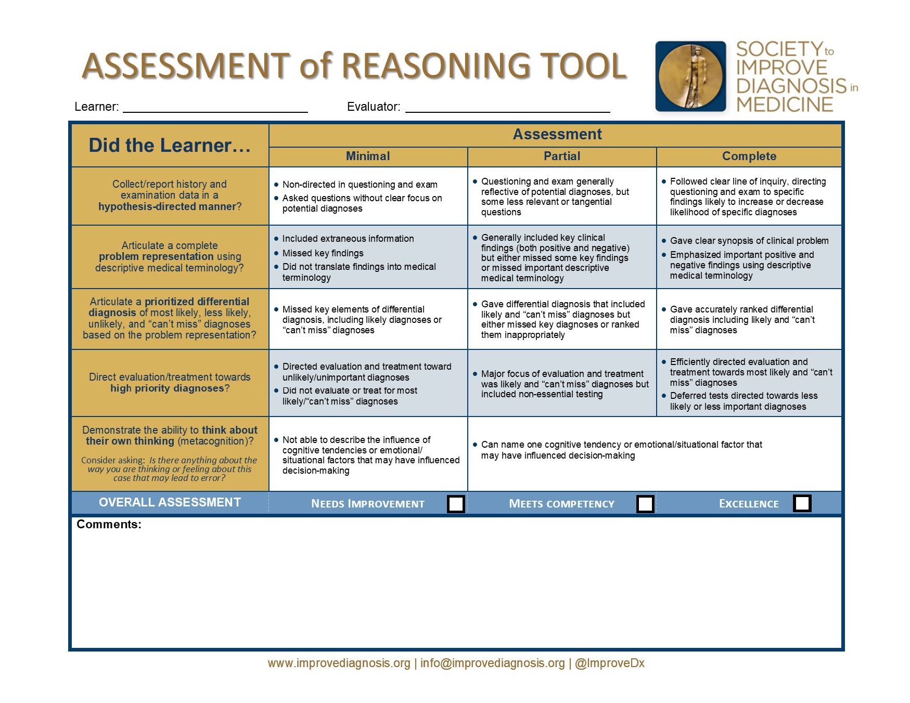

Activity: Scoring with Rubrics
Now we turn to another potential use of AI: supporting the time-intensive task of scoring student work using a rubric. I work in medical education, and one useful performance assessment that is used is the Objective Structured Clinical Examination (OSCE){target=“_blank”}. In short, an OSCE is a simulated patient interaction where the person being assessed must integrate several important aspects of clinical reasoning to provide effective care. These assessments typically require a summary note to be written after the encounter, which serves as documentation of the visit. I’ll use post-encounter notes from an OSCE as the motivating example for the following discussion because I’ve done some work in this area. However, the same principles apply to any assessment where a written rubric is used to evaluate student responses.
We begin by considering why rubrics are valuable when grading student assessments. Rubrics promote consistency, ensuring that all students are evaluated using the same criteria. They also help streamline grading and feedback, while reinforcing alignment between the assessment and the learning objectives.
Analytic Rubrics
There are at least two main styles of rubrics. The first is the analytic rubric, sometimes referred to as a “checklist” rubric. These are based on a list of specific elements that should be included in the student’s response, allowing for a more structured and detailed evaluation.
Here’s an example of an analytic rubric I developed while learning how to use AI to score OSCE notes. It’s important to note that I created this rubric independently, without any direct physician input. Even though this rubric may not be ideal for evaluating notes about a patient with plantar fasciitis, that wasn’t critical for my task. I simply needed a rubric for GPT to apply when evaluating a student’s post-encounter note.

The structure of the rubric is what matters here. It outlines specific clinical concepts that should appear in the note based on the patient’s presentation. Each concept is assigned a point value, and some entries include qualifiers for partial credit.
At the bottom I added an extra instruction for GPT: if the note describes a different clinical condition than the one specified in the rubric, it should not receive a score. This was designed to test how well GPTs could detect mismatched cases, such as when a student submits the same note across multiple cases to gain credit for generic elements like “normal vital signs” or “unremarkable family or social history.”
One advantage of analytic rubrics is their level of detail. They identify very specific concepts that should be included in a student’s response. Typically, each element is scored independently, meaning a student can earn credit for one element regardless of whether they included others.
However, applying analytic rubrics can be time-consuming. Imagine using the rubric above to score 100 student notes by hand. Even with practice, it would still take a considerable amount of time, and it’s easy to accidentally miss elements when reviewing so many responses.
There’s also a valid critique that analytic rubrics don’t always reflect the underlying construct you’re trying to measure. For example, it’s hard to make strong claims about a student’s clinical reasoning ability based solely on which discrete elements appear in their note.
Finally, analytic rubrics can be helpful for feedback - but this is a bit of a double-edged sword. While you can point out which elements were missing, documenting that feedback for each student can also be labor-intensive.
Holistic Rubrics
The other common type of rubric is the holistic rubric. These are more general in nature and typically consist of several high-level elements that reflect the overall quality of a student’s performance.
Here’s a strong example of a holistic rubric: the Assessment of Reasoning Tool (ART), developed by the Society to Improve Diagnosis in Medicine. It’s one of the more complete and thoughtfully designed holistic rubrics available, making it especially useful for our discussion.

Let’s use the top row of the rubric to explore how holistic rubrics work. This section asks: “Did the learner collect/report history and examination data in a hypothesis-directed manner?”
Each element in the ART rubric is rated across three performance levels: Minimal, Partial, and Complete. For this particular element, minimal is characterized by non-directed questioning and examination, with questions asked without a clear focus on potential diagnoses. Partial reflects questioning and examination that generally align with potential diagnoses, though some questions may be less relevant or tangential. And complete corresponds to a clear line of inquiry, with questions directed toward findings that meaningfully increase or decrease the likelihood of specific diagnoses.
As with most holistic rubrics, this one is intentionally generic. It’s designed to be broadly applicable across different clinical cases, rather than prescribing specific content for a specific scenario.
Another key difference from analytic rubrics is that holistic rubrics typically don’t assign numerical values to individual behaviors or content elements. Instead, they reflect an overall judgment of performance (which is why they’re called holistic). This also accounts for the varying importance of different elements within a case. And while you might be tempted to assign numbers like “1, 2, 3” to the categories, that’s not always appropriate given the qualitative nature of the assessment.
Using holistic rubrics often requires evaluators with sufficient expertise to distinguish between performance levels. They need to observe the learner’s approach and determine whether it reflects a “partial” or “complete” level of reasoning.
To summarize, holistic rubrics are typically more global in nature and don’t focus on discrete, minute elements of a student’s performance. They’re often easier to implement; rather than scanning a patient note for specific details, the evaluator simply places the student’s performance into a category, which can be done relatively quickly.
However, the lack of specific, objective criteria introduces a degree of subjectivity. For instance, a student on the borderline between “partial” and “complete” might be rated differently by two assessors, and both judgments could be well justified.
Additionally, because holistic rubric elements are more conceptual and less concrete, the feedback provided needs to be tailored to the learner’s specific performance. This can be time-intensive, especially if feedback isn’t delivered in person.
This comparison should help clarify the differences between analytic and holistic rubrics. Importantly, one isn’t inherently better than the other. Each is appropriate depending on the context and goals of the assessment.
Implications for LLM Scoring
So what does all this mean when using a GPT model to apply a rubric?
If you recall the concept of co-occurrence - the idea that words frequently used in similar contexts tend to have related meanings - GPTs are well-suited to produce and identify lexical variants. For example, if your rubric includes the phrase “nocturnal cough,” the model can easily identify that “wakes up at night coughing” conveys a similar meaning.
Thinking back to model attention, GPTs may struggle with long rubrics (although newer reasoning models are better at this). Their performance tends to drop when asked to process and apply lengthy criteria all at once. A simple workaround is to break the rubric into smaller, more manageable sections and then combine the results into a complete evaluation (part of what a reasoning model does behind the scenes, which is why it does better with longer rubrics).
Also, while this issue has improved in newer models, earlier GPTs had difficulty tracking scores when applying analytic rubrics. Remember, these are language models - their strength is literacy, not numeracy. So when asked to add multiple values, they treat more like a word problem and try to predict the answer based on the other tokens in the sentence. It’s similar to standing next to someone in an elevator and saying, “Hey, can you add 1 + 1 + 2 + 1 + 2 + 1 + 1 + 1 + 1?” and having them analyze that and respond purely from the semantics of the words, and not their associated numerical values. A very hard task to do! Although newer models handle this better, it’s still important to double-check the math when using GPTs for scoring.
Holistic rubrics present a different kind of challenge for LLMs, largely because they rely on the evaluator’s expertise to be effective. A sking a model to make global judgments across multiple score categories is a more complex task than identifying lexical variants of discrete concepts.
When using a GPT model with a holistic rubric, it’s best to evaluate each rubric element separately. This helps focus the model’s attention and improves the accuracy of its assessment.
To support this process, it’s often helpful to provide examples for each score category within the context of a specific case. Describing what differentiates one level of performance from another – especially by including examples - can give the model a proxy for the expertise typically required to make these judgments.
However, even with these supports, it’s important to recognize that many LLMs may not fully replicate expert-level evaluation. Expertise isn’t something the model “learns” during training; rather, it’s an emergent property built from abstracting general knowledge across many examples. GPTs learn relationships between words and concepts, but that doesn’t guarantee they’ll apply those relationships with the nuance and judgment of a human expert.
New Step: Using LLM to Parse Rubrics for Scoring
https://www.kaggle.com/competitions/learning-agency-lab-automated-essay-scoring-2/overview ? (nah - no rubric)